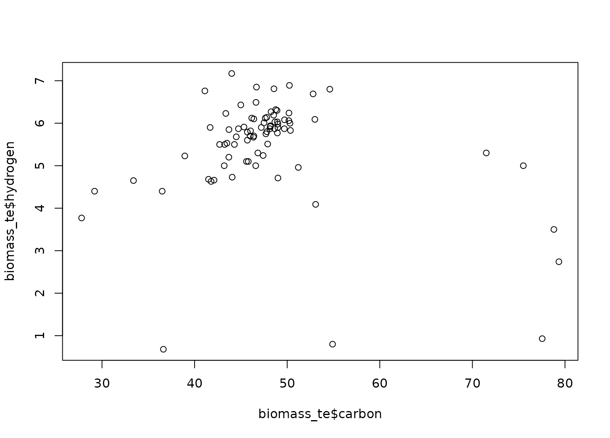
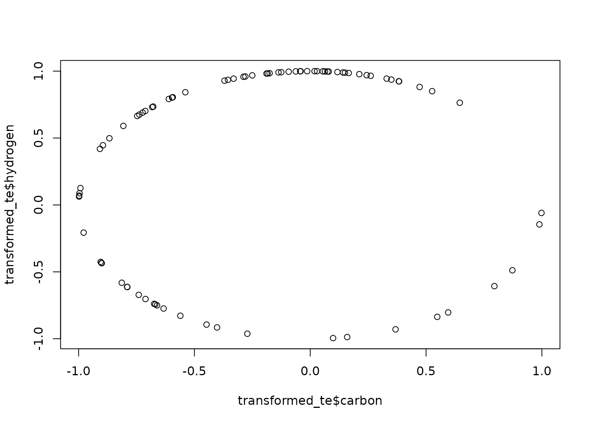

step_spatialsign is a specification of a recipe
step that will convert numeric data into a projection on to a
unit sphere.
step_spatialsign(
recipe,
...,
role = "predictor",
na_rm = TRUE,
trained = FALSE,
columns = NULL,
skip = FALSE,
id = rand_id("spatialsign")
)A recipe object. The step will be added to the sequence of operations for this recipe.
One or more selector functions to choose variables
for this step. See selections() for more details.
For model terms created by this step, what analysis role should they be assigned? By default, the new columns created by this step from the original variables will be used as predictors in a model.
A logical: should missing data be removed from the norm computation?
A logical to indicate if the quantities for preprocessing have been estimated.
A character string of variable names that will
be populated (eventually) by the terms argument.
A logical. Should the step be skipped when the
recipe is baked by bake.recipe()? While all operations are baked
when prep.recipe() is run, some operations may not be able to be
conducted on new data (e.g. processing the outcome variable(s)).
Care should be taken when using skip = TRUE as it may affect
the computations for subsequent operations.
A character string that is unique to this step to identify it.
An updated version of recipe with the new step added to the
sequence of any existing operations.
The spatial sign transformation projects the variables
onto a unit sphere and is related to global contrast
normalization. The spatial sign of a vector w is
w/norm(w).
The variables should be centered and scaled prior to the computations.
When you tidy() this step, a tibble with column terms (the columns
that will be affected) is returned.
Serneels, S., De Nolf, E., and Van Espen, P. (2006). Spatial sign preprocessing: a simple way to impart moderate robustness to multivariate estimators. Journal of Chemical Information and Modeling, 46(3), 1402-1409.
Other multivariate transformation steps:
step_classdist(),
step_depth(),
step_geodist(),
step_ica(),
step_isomap(),
step_kpca_poly(),
step_kpca_rbf(),
step_kpca(),
step_mutate_at(),
step_nnmf(),
step_pca(),
step_pls(),
step_ratio()
library(modeldata)
data(biomass)
biomass_tr <- biomass[biomass$dataset == "Training",]
biomass_te <- biomass[biomass$dataset == "Testing",]
rec <- recipe(HHV ~ carbon + hydrogen + oxygen + nitrogen + sulfur,
data = biomass_tr)
ss_trans <- rec %>%
step_center(carbon, hydrogen) %>%
step_scale(carbon, hydrogen) %>%
step_spatialsign(carbon, hydrogen)
ss_obj <- prep(ss_trans, training = biomass_tr)
transformed_te <- bake(ss_obj, biomass_te)
plot(biomass_te$carbon, biomass_te$hydrogen)

plot(transformed_te$carbon, transformed_te$hydrogen)

tidy(ss_trans, number = 3)
#> # A tibble: 2 × 2
#> terms id
#> <chr> <chr>
#> 1 carbon spatialsign_Geidk
#> 2 hydrogen spatialsign_Geidk
tidy(ss_obj, number = 3)
#> # A tibble: 2 × 2
#> terms id
#> <chr> <chr>
#> 1 carbon spatialsign_Geidk
#> 2 hydrogen spatialsign_Geidk